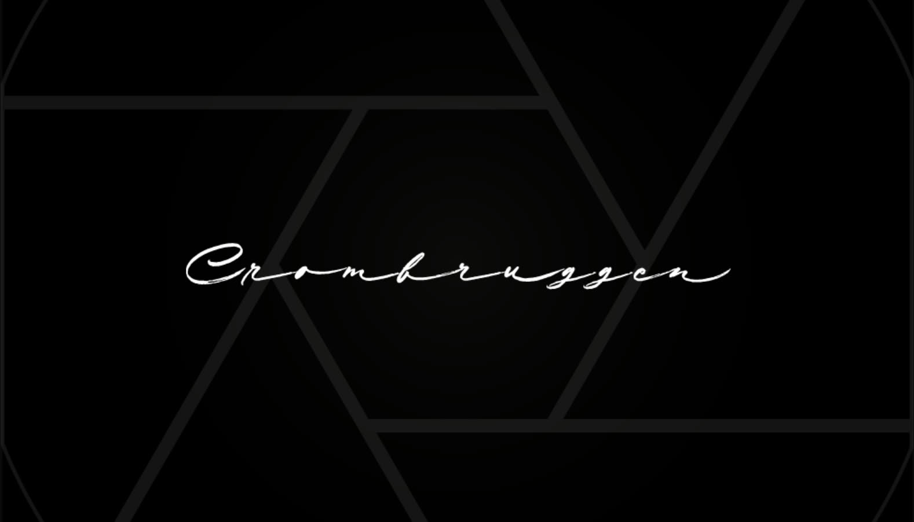
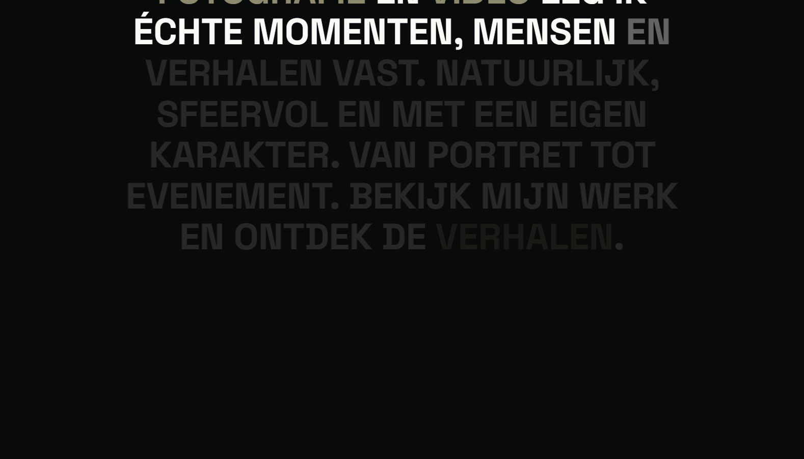

De opdracht
Crombruggen maakt zowel foto's als video's, dus de site moest twee disciplines dragen zonder in twee te splitsen. Het doel: één pagina, één sfeer, en een eerste indruk die sterk genoeg is om bezoekers te laten doorscrollen in plaats van af te haken.

De opening
De site opent op bijna zwart met niets dan het handgeschreven logo van Crombruggen en één scroll-hint. Even blijft het staan voor het je loslaat in de pagina. Die ingehouden start zet meteen de toon voor alles wat volgt: geduldig, cinematisch en duidelijk over beeld.
Beweging met een reden
In plaats van de pagina te versieren met effecten, vertelt de beweging het verhaal. Een marquee duwt de twee disciplines voorbij het scherm, en het openingsstatement licht woord per woord op terwijl je scrollt, zodat lezen een handeling wordt in plaats van een alinea die je overslaat. Alles hangt vast aan de scrollpositie en is uitgevlakt, wat het doelbewust houdt in plaats van onrustig.

Van donker naar licht
Na de cinematische opening kantelt de pagina naar een helder, licht canvas voor de diensten. Genummerde hoofdstukken geven de inhoud een vanzelfsprekend ritme, en het contrast laat de fotografie van de pagina springen. Het geeft de bezoeker ook even lucht voor de volgende sectie komt.
Het resultaat
Een site die aanvoelt als een showreel in plaats van een brochure. Ze is met de hand gecodeerd, dus ze laadt snel en blijft scherp op elk scherm, en ze geeft Crombruggen een online aanwezigheid die past bij het werk: rustig, sfeervol en zelfzeker.